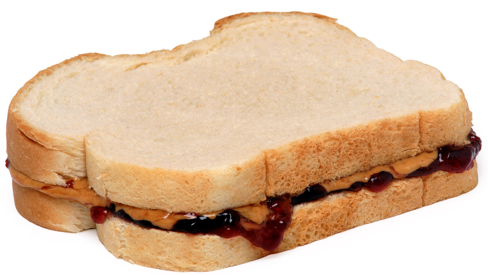

Peanut Butter and Jelly Sandwich

Description:
A delectable Peanut Butter and Jelly Sandwich. As delicious as it is easy to make. The best bet for struggling college students.
Ingredients:
- Bread (Preferably Brioche)
- Peanut Butter
- Jelly
Steps:
- Take two slices of bread and lay them on a plate
- Using a butter knife, get some peanut butter and spread it one slice of the bread.
- After cleaning off your knife to prevent cross contamination, spread Jelly using the knife on the other slice of bread.
- Now press both slices together and enjoy!